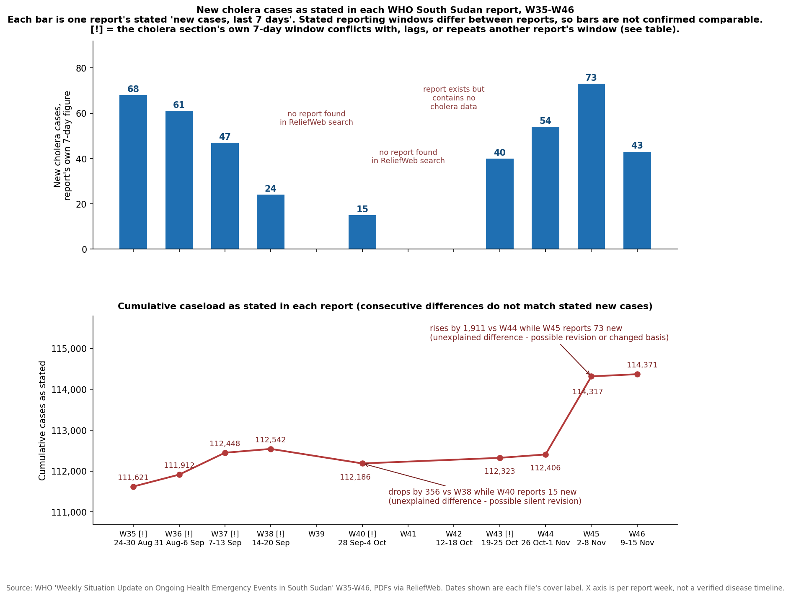

The short version
Pulling a number out of a PDF is the easy part. All ten reports found were machine-readable, and nine state a cholera "new cases, last 7 days" figure. The hard part is what the number means: the reporting windows those figures belong to differ between reports, conflict inside individual files, or are missing entirely. So what follows is a source-linked extraction table, not a validated disease timeline. Every figure is as stated in the source, with its passage, page and link.
The data
All figures are as stated in the source PDFs, not independently validated epidemiological counts. "Stated window" is the 7-day period the cholera section itself names; it often differs from the report's cover dates. Download the full table as CSV.
| Report | Cover dates (in file) | Stated 7-day window | New cases | New deaths | Cumulative cases | Status | Evidence |
|---|---|---|---|---|---|---|---|
| W35 | 24-30 Aug 2026 | Header: 20-26 Aug; county table: 13-19 Aug | 68 | 1 | 111,621 | windows conflict inside file | "CHOLERA - OUTBREAK UPDATE · LAST 7 DAYS: 20-26 AUGUST 2026 … 68 New cases · 7 days … New cases by county - last 7 days (13-19 Aug)" p.2 · PDF |
| W36 | 31 Aug-6 Sep 2026 | 27 Aug-2 Sep 2026 | 61 | 0 | 111,912 | window lags cover | "CHOLERA - OUTBREAK UPDATE · LAST 7 DAYS: 27 AUG-2 SEP 2026 … 61 New cases · 7 days … 0 deaths · 4 counties" p.2 · PDF |
| W37 | 07-13 Sep 2026 | 27 Aug-2 Sep 2026 | 47 | 1 | 112,448 | repeats W36's window | "CHOLERA - OUTBREAK UPDATE · LAST 7 DAYS: 27 AUG-2 SEP 2026 … 47 New cases · 7 days … 1 death · 5 counties" p.2 · PDF |
| W38 | 14-20 Sep 2026 | 13-20 Sep 2026 | 24 | 0 | 112,542 | starts day before cover | "CHOLERA - WEEK 38 UPDATE: 13-20 SEPTEMBER 2026 … 24 New cases · W38 … 0 deaths · 4 counties" p.2 · PDF |
| W39 | No report found in the ReliefWeb search. Absence from search results, not proof the report was never published. | ||||||
| W40 | 28 Sep-4 Oct 2026 | 24-30 Sep 2026 | 15 | 1 | 112,186 | window lags cover | "CHOLERA - WEEK 40 UPDATE: 24-30 SEPTEMBER 2026 … 15 New cases · W40 … 1 death · 3 counties … cumulative 112,186" p.2 · PDF |
| W41 | No report found in the ReliefWeb search. Absence from search results, not proof the report was never published. | ||||||
| W42 | 12-18 Oct 2026 | none | — | — | — | no cholera data in report | Cover lists "ON-GOING OUTBREAKS - Cholera outbreak (G3)", but there is no cholera tile on page 1 and no cholera section on pages 2-4. p.1 · PDF |
| W43 | 19-25 Oct 2026 | 15-21 Oct 2026 | 40 | 0 | 112,323 | window mostly outside cover | "In the last 7 days (15-21 October), 40 new cases and no deaths were reported from four counties: Fangak (26), Renk (7), Rubkona (4), and Mayom (3)" p.3 · PDF |
| W44 | 26 Oct-1 Nov 2026 | not dated ("last 7 days" only) | 54 | 0 | 112,406 | no dated window | "In the last 7 days, 54 new cases and no deaths were reported from four counties: Fangak (45), Renk (4), Rubkona (4) and Mayom (1), with 20 cases still admitted." p.3 · PDF |
| W45 | 2-8 Nov 2026 | not dated ("last 7 days" only) | 73 | 0 | 114,317 | no dated window | "In the last 7 days, 73 new cases and no deaths were reported from four counties: Fangak (33), Aweil West (28), Renk (11) and Rubkona (1)." p.3 · PDF |
| W46 | 9-15 Nov 2026 | not dated ("last 7 days" only) | 43 | 0 | 114,371 | no dated window | "In the last 7 days, 43 new cases and no deaths were reported from three counties: Fangak (31), Renk (8) and Aweil West (4), down from 88." p.4 · PDF |
The picture
Each bar is one report's stated figure. The horizontal axis is report order, not a verified timeline of comparable reporting periods.

What the analysis shows
- Extraction works. Nine of ten reports yield a stated new-case figure, and in all nine the county breakdown sums to the stated total. Every number was matched against the rendered page, not just the text layer.
- The windows disagree. Six reports carry a cholera-section window that conflicts with, lags or repeats another window (W35, W36, W37, W38, W40, W43). Three more state no dated window at all (W44-W46).
- Cumulative totals misbehave. W40's cumulative caseload drops by 356 against W38 while reporting 15 new cases; W45 jumps by 1,911 against W44 while reporting 73 new. Unexplained differences: possible silent revisions or a changed basis, not proven either way.
- A report can name a disease and say nothing about it. W42 lists cholera as an active outbreak on its cover and contains no cholera figures.
- Absence is ambiguous. W39 and W41 did not surface in the ReliefWeb search, which says nothing about whether they exist elsewhere.
The evidence, up close
Page crops from the source PDFs: a window conflict inside W35, W37 repeating W36's window, W42's data-free cholera cover, and W45's cumulative jump.

How it was done
- Find.A ReliefWeb search for the WHO "Weekly Situation Update on Ongoing Health Emergency Events in South Sudan" series, report weeks 35-46 of 2026. Ten reports found; W39 and W41 did not surface.
- Download.Each report's PDF, taken from the download link on its ReliefWeb page. All ten were machine-readable; none were scans.
- Extract.From each cholera section: the stated new cases and deaths for the "last 7 days", the cumulative caseload, and the county breakdown, each with the verbatim sentence it came from and the PDF page number.
- Verify visually.Every extracted figure was checked against the rendered page image: headline tiles, county bars and narrative. County figures sum to the stated totals in all nine data-bearing reports.
- Preserve, don't reconcile.Cover dates and section windows are kept as separate fields, with conflict flags, never silently resolved. Where ReliefWeb's listing dates and the dates inside a file ever differ, the dates inside the file are treated as authoritative (the project owner's call).
The challenges
- One file can disagree with itself. W35's heading says 20-26 August; its county table says 13-19 August. Both are kept on record; neither was silently chosen.
- Windows drift between reports. W37 repeats W36's window, W40's window lags its cover week, and W44-W46 give no dates at all, so "new cases this week" is not one consistent measurement.
- Totals move without explanation. The cumulative line falls and jumps in ways the stated new cases cannot account for.
- Absence is not evidence. Two report weeks are missing from search results, and one report names cholera without reporting on it.
- Source hygiene varies. One report's canonical download is literally named "servlet.FileDownload (7).pdf".
- The rule that kept it honest: publish figures as stated, with evidence, and never clean them into a nicer story.
Sources
Every report page and PDF is linked in the table above. The series was found through this ReliefWeb search; the publisher is the World Health Organization, via ReliefWeb (OCHA). The full extraction table: cholera-extraction-w35-w46.csv.
Status: one-off test, completed 24 November 2026. No ongoing collection is running for this project.